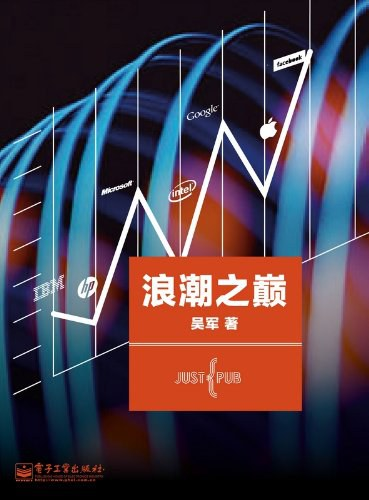

《浪潮之巅》

总体观点
前Google资深科学家吴军以宏大的科技商业全景视角，在《浪潮之巅》中梳理了近百年来硅谷及全球信息产业的崛起、繁荣与更迭，解构了科技巨头的兴衰密码。
核心命题：在极度剧烈的技术浪潮面前，任何商业帝国的宿命都在很大程度上由时代的潮水决定。一个掌握核心技术与商业模式的企业一旦站在浪潮之巅，就能如日中天；而一旦时代转折，哪怕拥有再多资金与天才也难以逆势挽回。
全书提炼出摩尔定律、安迪-比尔定律与反摩尔定律构成的产业生态链，深刻剖析了风投机制、斯坦福孵化生态与颠覆性创新的本质，是理解现代科技商业史的里程碑之作。
核心观点 共 7 条
-
1. 商业帝国的成功往往归于时代的宿命与浪潮的推力
企业的命运主要取决于是否踩中了历史演进的时代浪潮，个人与团队的努力必须建立在正确的时代趋势之上。
例 ·微软凭借微机革命的Windows和Office君临天下，而一旦智能手机浪潮来临，即便动用数百亿资金收购诺基亚也无法挽回移动操作系统的败局。 -
2. 摩尔定律、安迪-比尔定律与反摩尔定律构筑了IT工业的生态闭环
硬件降价提升性能，软件吃掉全部硬件红利逼迫用户换机，反向迫使芯片厂必须以18个月翻倍的速度生死狂奔。
例 ·英特尔不断推出更强算力CPU，微软Windows就加入更多图形渲染和组件吃掉算力，两者结成Wintel联盟统治PC市场数十年。 -
3. 基因决定论揭示了科技巨头跨界转型的不可逾越之壁
一个公司的基因在它成功商业模式定型的那一刻就已确立，几乎没有一家巨头能在开辟全新第二曲线时战胜原生新贵。
例 ·以企业级硬件和大型机起家的IBM无法在个人电脑操作系统上干过微软，做搜索起家的Google在社交网络领域屡战屡败。 -
4. 印钞机模式是商业世界的最高境界，边际成本趋零是科技公司的核心壁垒
最顶级的科技商业模式是前期研发巨大、后续每增加一个用户几乎零边际成本的规模机器。
例 ·Google的搜索广告系统AdWords一旦搭建完成，服务器全自动匹配关键词分发广告，无需人工销售介入即可日进斗金。 -
5. 风险投资与斯坦福大学是硅谷永不干涸的创新源泉
宽容失败的硅谷文化、紧密结合的产学研纽带，加上不求单一项目必成但求博取百倍回报的风投资本，形成了生生不息的创新雨林。
例 ·红杉资本与KPCB在斯坦福两个博士生（佩奇和布林）刚写出PageRank算法雏形时便注资2500万美元，孕育了后来的科技帝国Google。 -
6. 金融风暴是科技泡沫的残酷清道夫，但也为下一次技术爆发清理了跑道
资本狂欢必然引发估值泡沫，泡沫破裂虽然血流成河，却沉淀下了廉价的基础设施与坚韧的幸存者。
例 ·2000年互联网泡沫破灭让数千家点康姆公司倒闭，但铺设好的数万公里跨洋光缆却成为后来YouTube、Netflix等流媒体繁荣的坚实底座。 -
7. 创新者的窘境注定守成巨头会被边缘颠覆者拉下神坛
巨头因深陷服务现有高利润客户的财务报表逻辑，往往看不上初期粗糙低廉的颠覆性技术，最终被悄然成长的对手彻底颠覆。
例 ·数码相机是柯达工程师最早发明的，但因为害怕砸掉自己暴利的胶卷饭碗而束之高阁，最终在数码时代轰然破产。
全书结构 23 部分 官方目录已核验
-
第 1 章 帝国的余辉—AT&T 公司
梳理AT&T百年电信垄断帝国的兴衰史，剖析贝尔实验室的学术辉煌与利令智昏的分拆悲剧。
例 ·反垄断法案虽然多次分拆AT&T，但真正要它命的是朗讯盲目扩张、资本运作失误与互联网数据通信对传统语音网络的降维打击。 -
第 2 章 蓝色巨人—IBM 公司
回顾IBM历经机械革命、电子技术与全球信息化浪潮的转型奇迹，剖析郭士纳如何带领巨象重新跳舞。
例 ·郭士纳上任后力排众议拒绝分拆IBM，将重心从亏损的硬件大型机全面转向高利润的企业IT服务与软件解决方案。 -
第 3 章 “水果”公司的复兴—乔布斯和苹果公司
记录乔布斯传奇式的跌宕生涯，剖析苹果凭借图形界面、软硬件一体化与i系列消费电子产品的惊天逆袭。
例 ·从濒临破产到推出iPod、iPhone与App Store，乔布斯用极致美学与移动互联网生态构建了人类商业史上最赚钱的闭环帝国。 -
第 4 章 计算机工业的生态链
系统提炼支配IT产业运转的三大核心动力学定律：摩尔定律、安迪-比尔定律与反摩尔定律。
例 ·如果一家IT公司今天和18个月前卖掉同样多的产品，营业额就要降一半；这迫使硬件厂商必须不断降价提速、软件厂商不断消耗算力。 -
第 5 章 奔腾的芯 — 英特尔公司
追踪半导体王者英特尔从存储器绝地求生转型微处理器的生死博弈，剖析格鲁夫偏执狂管理哲学的胜利。
例 ·面对日本DRAM存储器的低价围剿，格鲁夫与摩尔毅然壮士断腕停产存储芯片，把全部身家赌在微处理器8086上赢得新生。 -
第 6 章 IT 领域的罗马帝国—微软公司
解构盖茨打造的软件日不落帝国，剖析操作系统与办公套件两记重拳的垄断威力及遭遇反垄断诉讼的重创。
例 ·微软通过将IE浏览器与Windows系统强制捆绑，一举击垮了当红的网景浏览器，但也引来了司法部险些将其肢解的世纪诉讼。 -
第 7 章 互联网的金门大桥—思科公司
记录网络路由器巨头思科在互联网基础设施大建设时代的狂飙突进与泡沫破灭后的断崖式下跌。
例 ·思科凭借发明多协议路由器成为网络数据交通枢纽，市值在2000年一度登顶全球第一，随后在电信投资退潮后市值蒸发近九成。 -
第 8 章 英名不朽—杨致远、菲洛和雅虎公司
还原互联网门户先驱雅虎开创免费内容+广告变现模式的辉煌历程，反思其在技术研发与并购战略上的致命失误。
例 ·雅虎曾有机会以极低代价收购初创期的Google和Facebook，却因自诩为媒体公司而屡次错过技术转型的历史列车。 -
第 9 章 硅谷的见证人—惠普公司
回溯斯坦福车库创业传奇惠普公司对硅谷工程师文化的奠基，剖析官僚主义侵蚀与战略迷茫对惠普之道的摧毁。
例 ·菲奥莉娜主导巨资收购康柏电脑不仅没有形成协同效应，反而使惠普深陷低利润PC泥潭，引发董事会激烈的窃听丑闻内耗。 -
第 10 章 没落的贵族—摩托罗拉公司
剖析无线通信鼻祖摩托罗拉的兴衰，揭示铱星计划好高骛远的豪赌失败与在模拟转数字时代掉队的沉痛教训。
例 ·摩托罗拉斥资数十亿美元发射66颗低轨卫星打造全球通话的铱星网络，却因终端笨重昂贵且未能预见到地面蜂窝基站的爆发而瞬间破产。 -
第 11 章 硅谷的另一面
揭开硅谷光鲜技术外表下的残酷现实：极高的生活成本、高压淘汰机制、专利流氓敲诈与初创公司的九死一生。
例 ·数万名怀揣暴富梦想的顶尖工程师在车库日夜赶工，然而95%的初创企业在天使轮或A轮耗尽资金后无声无息地倒闭清算。 -
第 12 章 短暂的春秋—与机会失之交臂的公司
复盘网景、太阳计算机（Sun）、SGI等一代技术明星从划时代创新到迅速陨落的警示案例。
例 ·发明Java语言与高性能工作站的Sun公司，坚持高价自研硬件路线，最终在开源Linux和廉价x86服务器的夹击下被甲骨文廉价吞并。 -
第 13 章 幕后的英雄—风险投资
揭秘红杉资本、KPCB等顶尖风投机构的商业逻辑与运作机制，阐明风险投资如何充当硅谷创新的发动机。
例 ·风投基金遵循二八定律甚至一九定律，投资十个项目死掉八九个不要紧，只要有一个成长为苹果或Google便能收回百倍本金。 -
第 14 章 信息产业的规律性
提炼信息科技产业的底层法则：70-20-10规律（老大拿走行业70%利润）、商业生态链控制权与技术颠覆范式。
例 ·在搜索引擎和电商平台领域，排名前两位的巨头几乎瓜分了全行业的利润池，第三名及以后的跟随者大多长期处于亏损挣扎边缘。 -
第 15 章 硅谷的摇篮—斯坦福大学
深入特曼教授倡导的实用主义产学研孵化体系，揭示斯坦福工业园如何孕育出整个硅谷的科技版图。
例 ·特曼鼓励斯坦福师生创业并给予土地和资金扶持，直接孵化了惠普、瓦里安、思科、雅虎与Google等一长串改变世界的巨擘。 -
第 16 章 科技公司的吹鼓手—投资银行
剖析高盛、摩根士丹利等华尔街顶级投行在科技公司IPO承销、市值包装与资本并购中的幕后操盘手角色。
例 ·投行通过路演造势为初创公司争取天文数字估值，并在上市首日护盘推高股价，在赚取巨额承销费的同时左右企业控制权。 -
第 17 章 挑战者—Google 公司
详解佩奇与布林凭借PageRank算法颠覆搜索引擎的传奇，剖析Google不作恶信条与技术驱动的工程师文化。
例 ·Google颠覆了雅虎等门户将用户强留在站内的做法，以极简白底搜索框用毫秒级速度将用户送达目标网页，反向赢得了全网信赖。 -
第 18 章 成功的转基因—诺基亚、3M、GE 公司
探寻传统制造业老牌巨头如何通过彻底重构自身业务板块成功完成基因突变、跨界存活并再登巅峰。
例 ·诺基亚从一家芬兰伐木造纸和橡胶鞋作坊起家，在几十年间果断剥离传统产业，彻底蜕变为全球通信手机无可撼动的霸主。 -
第 19 章 印钞机—最佳的商业模式
深度解析现代IT公司最令人垂涎的商业模式：边际成本趋于零、强网络效应以及自动运转的广告与软件授权机器。
例 ·微软Windows系统光盘的压盘成本只有几毛钱，却能卖上千元；Google的搜索广告全自动点击计费，堪称商业世界的永动机。 -
第 20 章 互联网 2.0
剖析Facebook、Twitter等社交网络与UGC内容平台如何打破传统门户的单向灌输，重塑人与人的信息连接网络。
例 ·扎克伯格从大学花名册起步，用实名制人际关系链构建Facebook，将静态网页浏览转变为千人千面的动态信息流交互。 -
第 21 章 金融风暴的冲击
复盘2008年次贷危机与全球流动性紧缩对科技行业的严酷洗礼，指出危机是去伪存真、强弱分化的试金石。
例 ·红杉资本在危机爆发时向旗下创业公司发出著名的“安息吧，好时光（RIP Good Times）”警示信，倒逼企业砍掉冗员储备现金过冬。 -
第 22 章 云计算
展望从本地计算向云端基础设施迁移的时代巨浪，剖析亚马逊AWS与Google分布式系统如何改写企业IT格局。
例 ·亚马逊将自身闲置的服务器资源包装为弹性可按需付费的AWS云服务，彻底消除了初创企业自建昂贵机房的资金壁垒。 -
第 23 章 下一个 Google
探讨站在浪潮之巅后科技巨头如何逃避衰退宿命，总结引领未来的下一代革命性技术（移动互联、人工智能与生物计算）。
例 ·任何老一代霸主都会老去，唯有不断打破组织内耗、主动拥抱颠覆性技术创新的边缘新军，才能成为下一个掀起惊涛骇浪的时代王者。